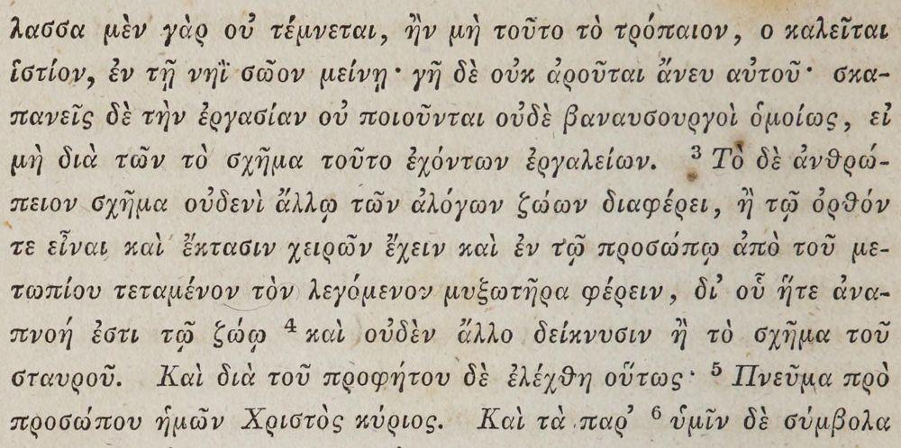

The figure of the cross in the world (c. 55)
Greek: Justin, Apologia I, c. 55, ed. Otto (1842), p. 248, scan n327. The superscript figures on the page are Otto’s note numbers, omitted here. Highlighted: what Lecky paraphrases.

[Consider everything in the world, whether without this figure it could be governed or hold together.] For the sea is not cut unless this trophy, which is called the sail, stays whole on the ship; the earth is not ploughed without it; diggers do not do their work, nor craftsmen either, except with tools that have this shape. And the human form differs from the irrational animals in nothing else than in standing upright, having the arms stretched out, and bearing on the face, extending from the forehead, what is called the nose, through which the creature breathes; and this shows nothing other than the figure of the cross. And it was said through the prophet thus: The breath before our face is Christ the Lord.
Translation: this edition’s draft. The bracketed opening sentence is translated from the OCR of p. 246, not checked on the image.
Original Greek
[θά]λασσα μὲν γὰρ οὐ τέμνεται, ἢν μὴ τοῦτο τὸ τρόπαιον, ὃ καλεῖται ἱστίον, ἐν τῇ νηῒ σῶον μείνῃ· γῆ δὲ οὐκ ἀροῦται ἄνευ αὐτοῦ· σκαπανεῖς δὲ τὴν ἐργασίαν οὐ ποιοῦνται οὐδὲ βαναυσουργοὶ ὁμοίως, εἰ μὴ διὰ τῶν τὸ σχῆμα τοῦτο ἐχόντων ἐργαλείων. Τὸ δὲ ἀνθρώπειον σχῆμα οὐδενὶ ἄλλῳ τῶν ἀλόγων ζώων διαφέρει, ἢ τῷ ὀρθόν τε εἶναι καὶ ἔκτασιν χειρῶν ἔχειν καὶ ἐν τῷ προσώπῳ ἀπὸ τοῦ μετωπίου τεταμένον τὸν λεγόμενον μυξωτῆρα φέρειν, δι’ οὗ ἥ τε ἀναπνοή ἐστι τῷ ζώῳ, καὶ οὐδὲν ἄλλο δείκνυσιν ἢ τὸ σχῆμα τοῦ σταυροῦ. Καὶ διὰ τοῦ προφήτου δὲ ἐλέχθη οὕτως· Πνεῦμα πρὸ προσώπου ἡμῶν Χριστὸς κύριος.
Otto’s Latin on the facing page (p. 249) renders ἱστίον as “velum”, the sail; the “trophy” is the cross formed by mast and yard. The verse is Lamentations 4:20, which tradition ascribed to Jeremiah.
Further down the rabbit hole
Sources that Lecky cites in the notes next to the ones that cite this page.
- Tertullian, De baptismoLecky’s two water passages checked against Migne
- Binsfeld, Tractatus de confessionibus maleficorum et sagarumThe suffragan bishop of Trier on why witches float, and why women fall
- Raoul-Rochette, Cours d’archéologieWhy Greek statues were naked: “God is naked”, and emperors stripped for apotheosis
- Agobard, Liber de imaginibusLecky’s five Agobard quotes checked against Baluze
- Aquinas, Summa theologiae, Supplement, q. 94Lecky’s quotation that is really a paraphrase
- Augustine, De Genesi contra ManichaeosGenesis as allegory: the six days as the ages of history and the stages of the soul


Backlinks
Every place in Rationalism in Europe that links to this page (generated automatically when the site is built).
- Chapter III: note 1